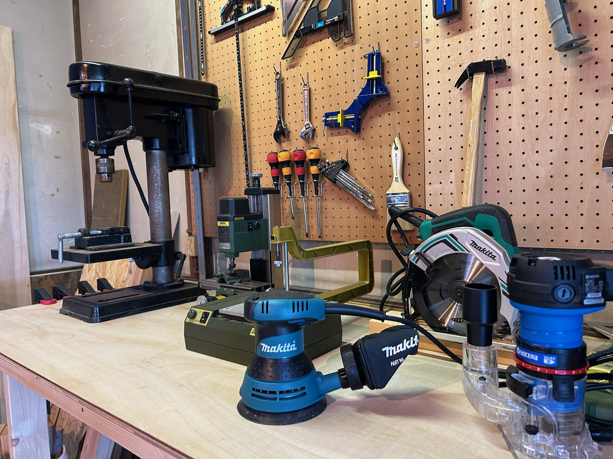
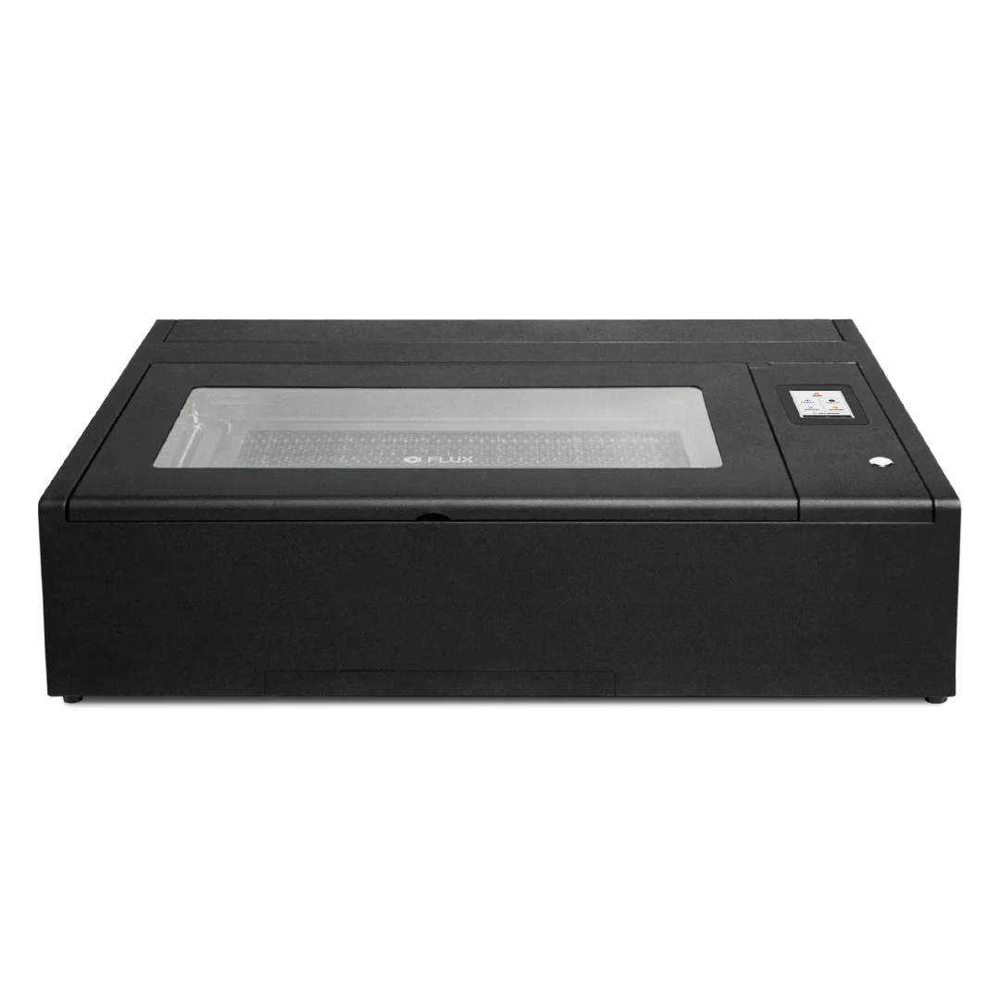
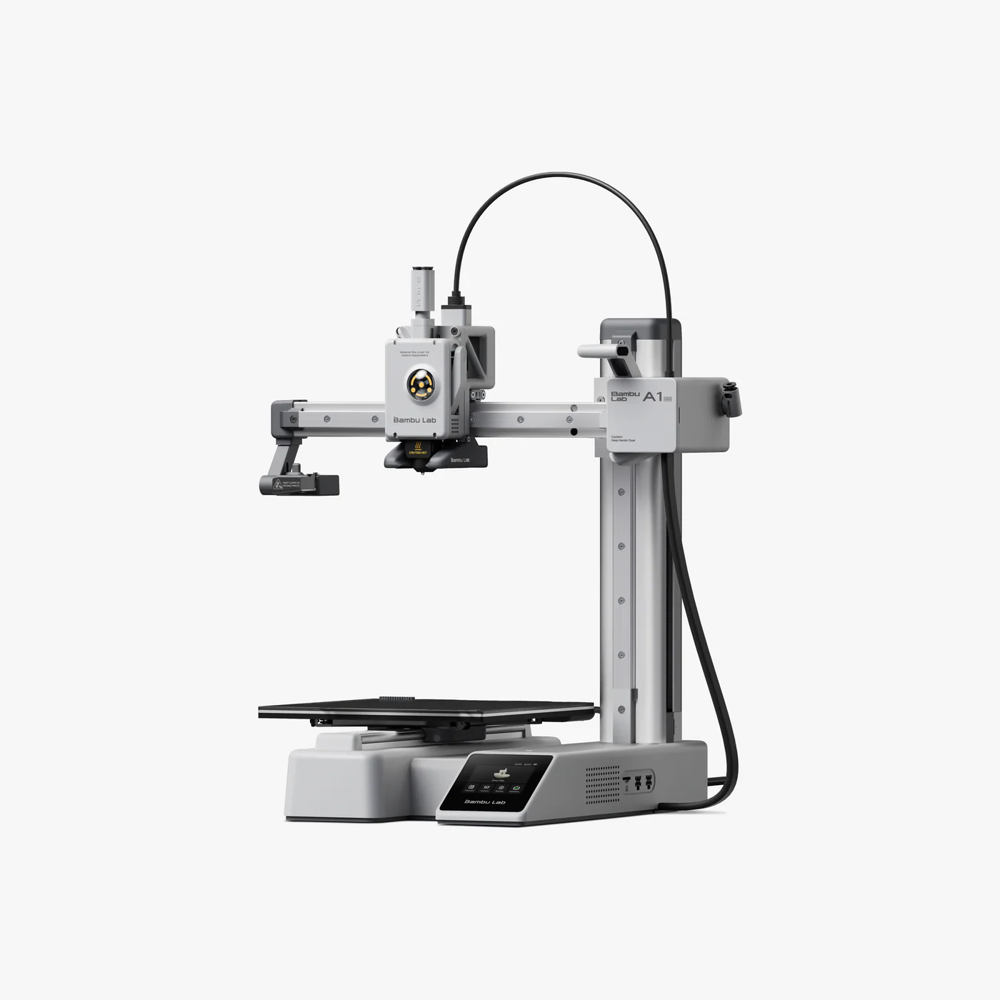
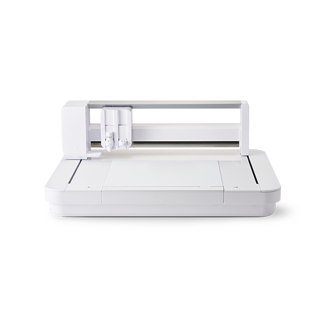

Kimitsu, Chiba — Makerspace
つくることで、ちょっと新しい自分に出会う場所。君津のシェア工房。
TukuriE（ツクリエ）は、千葉県君津市に生まれたシェア工房です。
「あったらいいな」をカタチに——そんな一歩を踏み出したい方のために、この場所があります。
木工の道具も、3Dプリンタなどの最近機材も、ひとりで揃えようとすれば大きなハードルがあります。
TukuriEは、その壁をなくし、アイデアさえあれば誰でも形にできる場所を目指しています。
DIYを楽しみたい方、ハンドメイド作品をつくりたい方、子どもと一緒に工作を楽しみたい方——
ここは、あなたの「作ってみたい」という気持ちを応援する工房です。
すべての起点は「わたし」から。
つくることで自分がかわる。
自分が変われば、きっと周りの大切なひとも変わる。
そうして「創り手」がこの街に増えていくことで、ひいては地域社会が変わり、私たちの未来だって豊かに変わっていく。
私たちはそう信じています。
だからこそ、TukuriEが何よりも大切にしたいのは、
他の誰でも無い「あなた（I）」の、小さな「作ってみたい」というワクワクです。
TukuriEは、そんなワクワクする未来のはじまりの場所でありたいと願っています。
プロ仕様の設備が、あなたのアイデアを現実にします。

基本的な手工具から作業台まで、本格的な木工作業ができる環境を完備。 初心者の方も安心してご利用いただけます。

Beambox IIを設置。木材・アクリル・革など多様な素材を 精密にカット・彫刻できます。

3次元の造形物を自在に出力。試作品づくりからオリジナルグッズ制作まで、 幅広い用途に対応しています。

CURIO2（Silhouette）を設置。シール・ステッカーや 布へのカッティングで、オリジナルグッズ制作が手軽に。
※料金の詳細は予約フォームにてご確認いただけます。
初めての方も、3ステップで簡単に始められます。
下記カレンダーで、ご希望の日時の空き状況をご確認ください。 随時更新しています。初めての方は、まずは見学にお越しください。
専用のGoogleフォームから、ご希望の機材・スペースと日時をご選択いただき、 料金をご確認の上ご予約ください。
予約した日時に、TukuriEへお越しください。 初めての機材はスタッフが丁寧にご説明します。
ご希望の日時をご確認の上、ご予約ください。
RESERVATION
料金の確認からご予約まで、Googleフォームで簡単に行えます。
はじめての方も、お気軽にどうぞ。